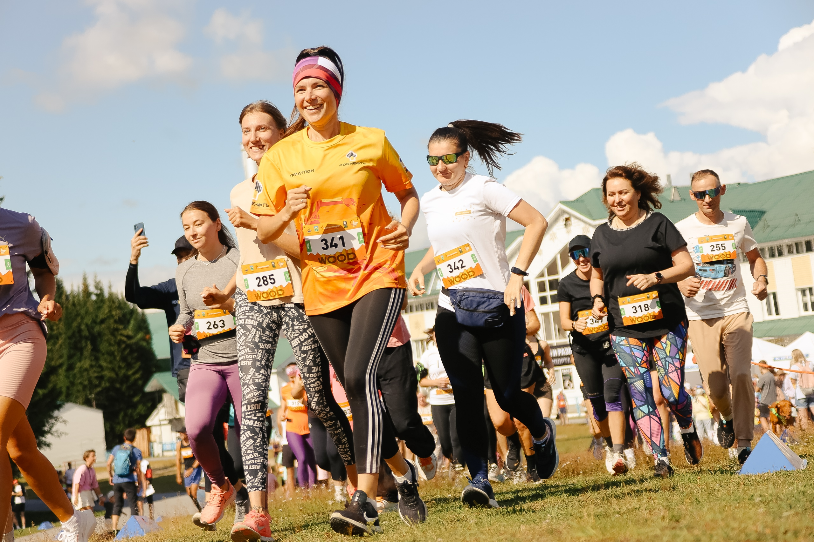
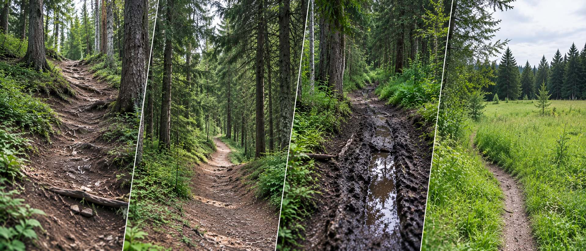
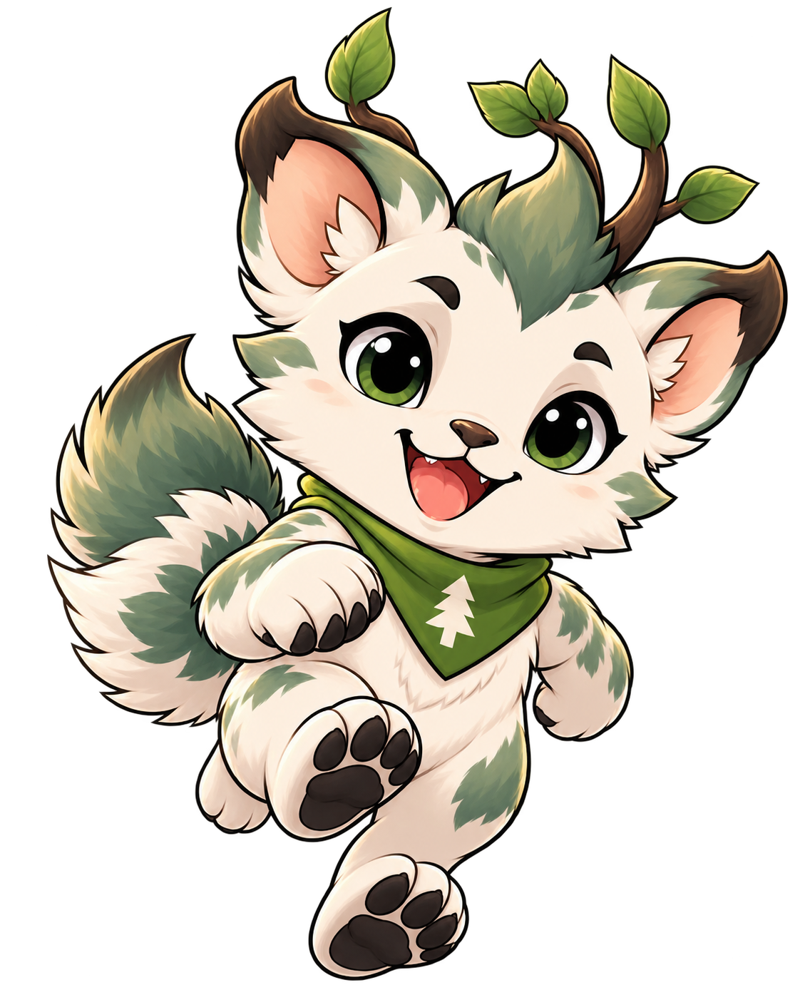
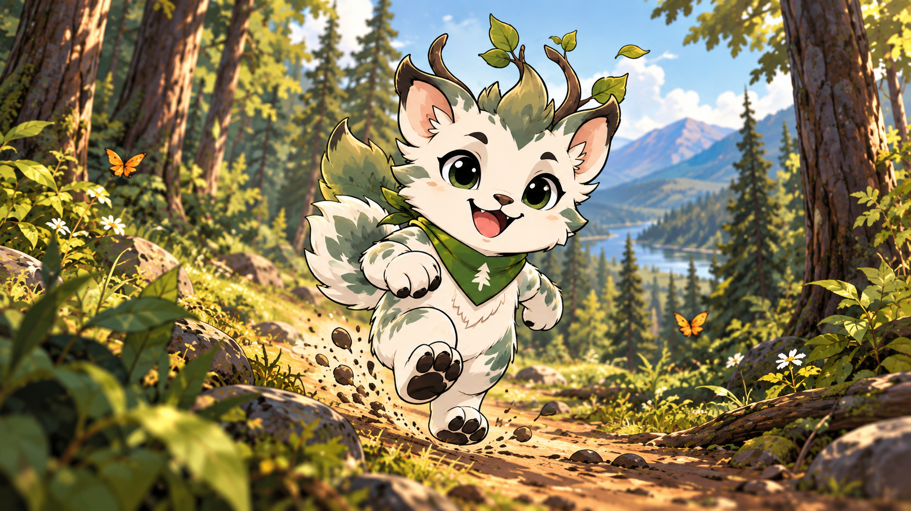
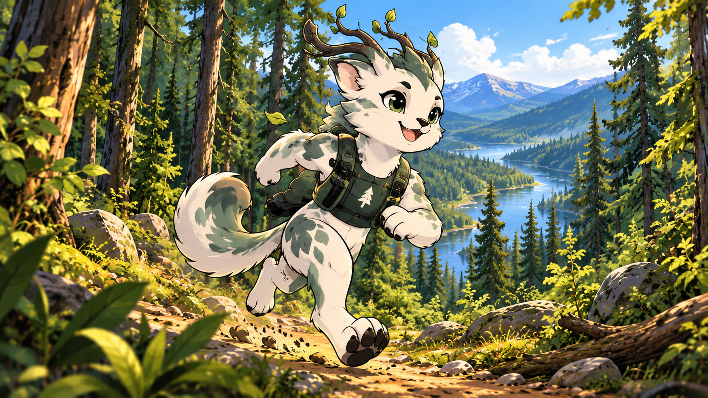
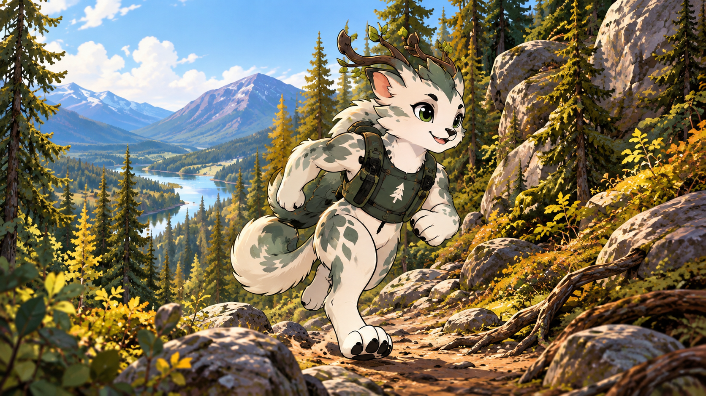
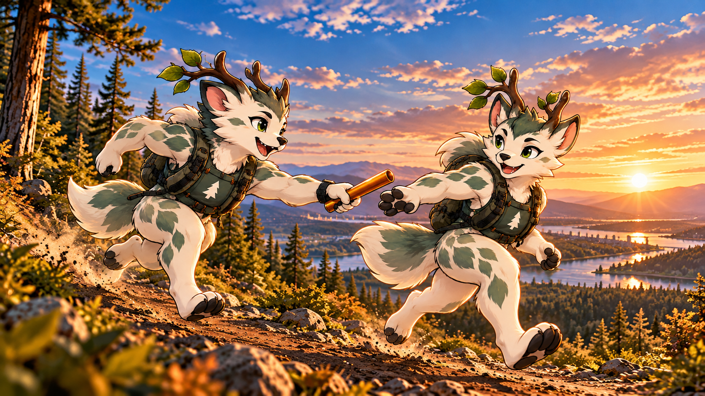
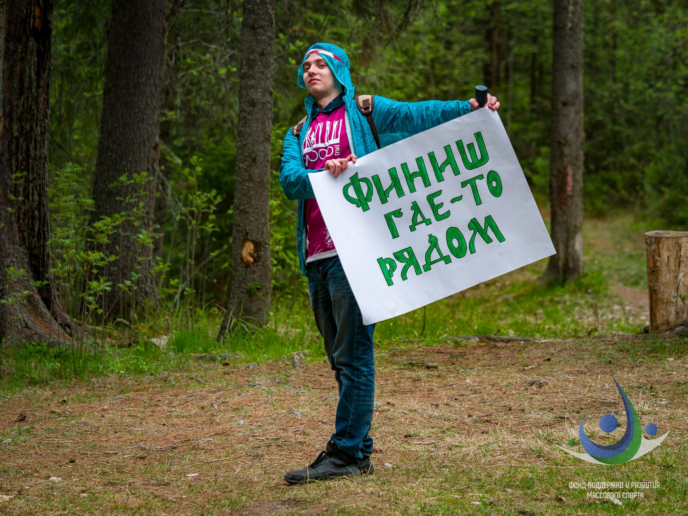

18 ИЮЛЯ
Просмотр трассы
Знакомимся с маршрутом. Программа появится позже.

25 ИЮЛЯ 2027 · ХАНТЫ-МАНСИЙСК
WOOD TRAIL возвращается.
Встречаемся там, где начинается настоящее.
Самаровский чугас · Долина ручьёв
НЕ ПРОСТО КИЛОМЕТРЫ
Лесные тропы, рельеф и люди, с которыми хочется разделить каждый финиш. Выбери свою дистанцию — от первого детского старта до тридцати километров с характером.
25 июля 2027
Ханты-Мансийск
Калинина, 1
Подъёмы и спуски, корни, узкие тропы и широкие участки лыжной трассы. Здесь маршрут всё время меняет ритм.

Лесная тропа · Рельеф · Самаровский чугас
ОДИН ЛЕС. РАЗНЫЕ ПУТИ.

Детский · 0–6 лет
Первый лесной старт для самых маленьких.
О дистанции
Детский · 7–12 лет
Больше тропы, больше движения.
О дистанции
Массовый · 13+
Попробовать трейл и почувствовать его характер.
О дистанции
Любительский · 18+
Полноценный маршрут по рельефу чугаса.
О дистанции
Длинный · 18+
Тридцать километров на лесных тропах.
О дистанции
Эстафета · 3 участника
Три этапа. Одна команда.
О дистанцииРегистрация откроется отдельно. Пока можно познакомиться с дистанциями и маршрутами.
Всё началось с ВУДТРЕЙЛ. В 2017 году мы впервые вышли на эти тропы. В 2027-м наше сообщество отмечает десятилетие.

КОМАНДА СТАРТА
На трассе, в стартовом городке, рядом с участниками. За каждым тёплым стартом стоят люди.
Стать волонтёром18 ИЮЛЯ
Знакомимся с маршрутом. Программа появится позже.
24 ИЮЛЯ
Встречаемся накануне старта. Детали — после утверждения программы.
ДОКУМЕНТЫ
Правила и условия участия в предоставленном положении.
Скачать DOCX